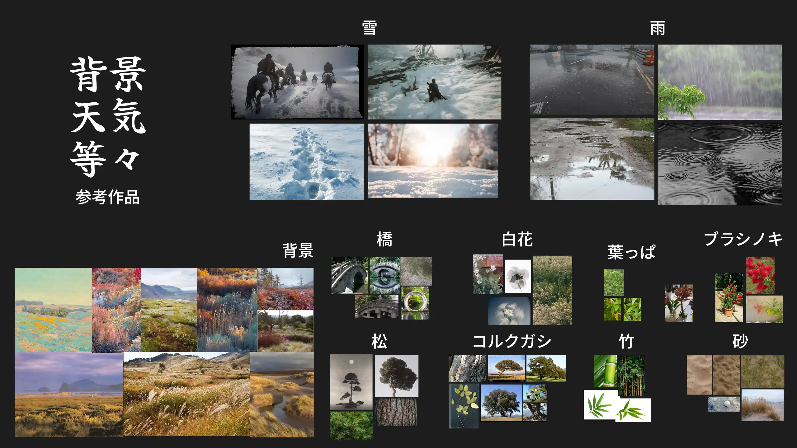
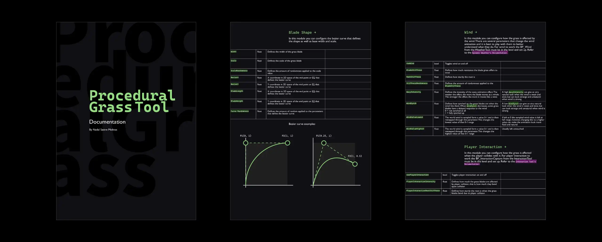
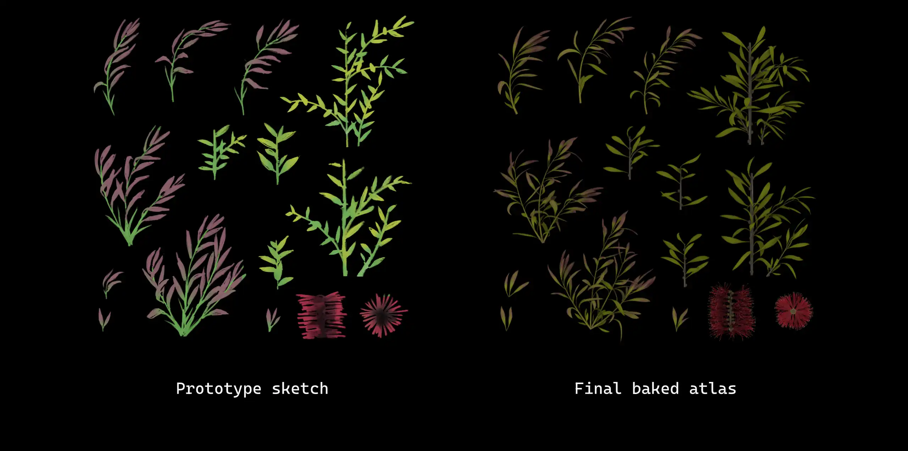
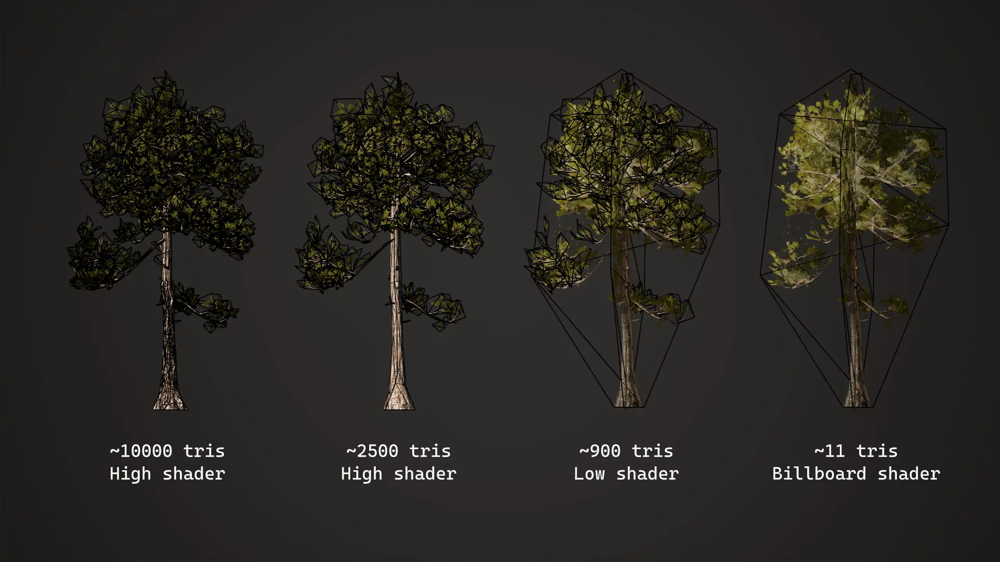
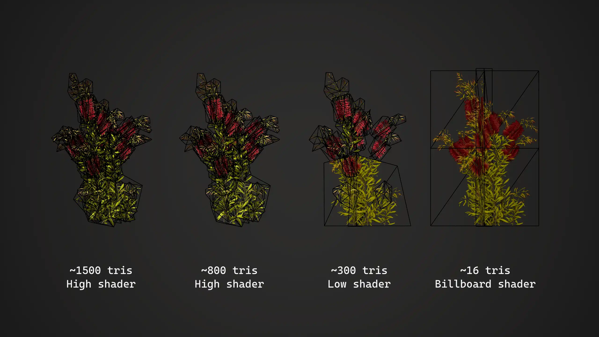
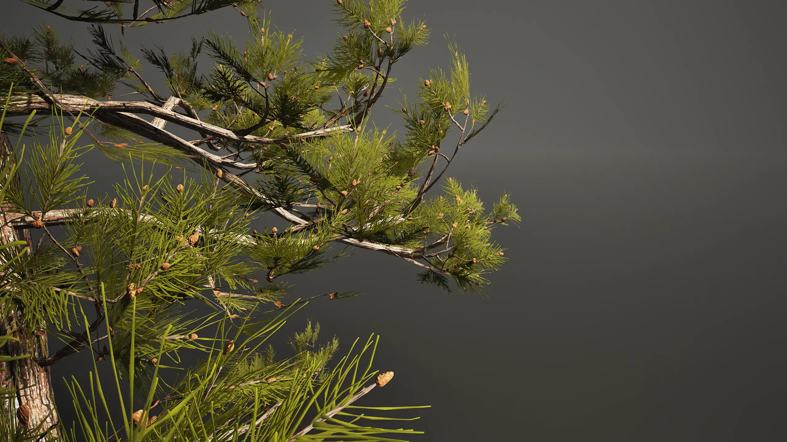
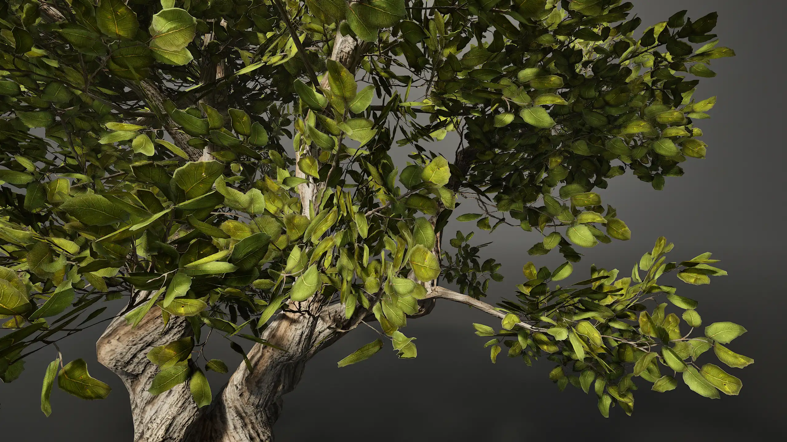
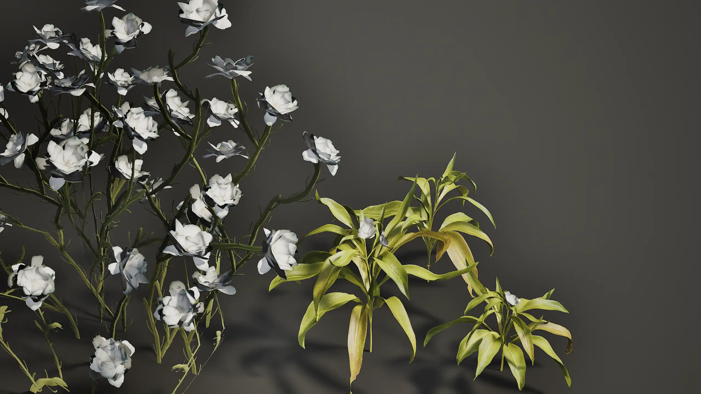
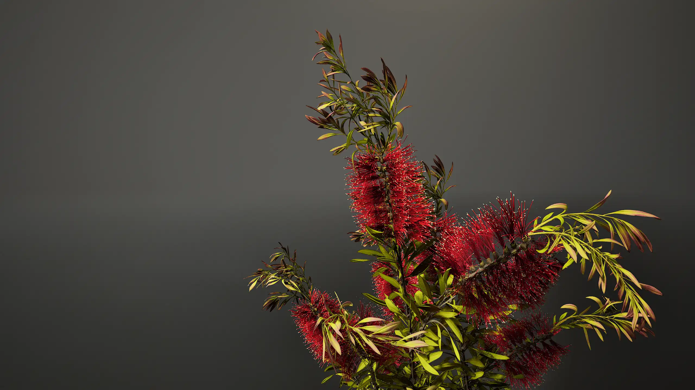

2025年2-5月
Unreal Engine, 3DS Max, Blender, Substance Designer, Substance Painter, Houdini, Gaea, ZBrush, Adobe Photoshop, Illustrator, InDesign, DaVinci Resolve
このプロジェクト内のすべてのアセットおよびコンテンツは、以下のものを除き、すべて私が作成したものです：
- Desert Western Rocks/Cliffs collection by Quixel on Fab
- Minedump Flats HDRI by Dimitrios Savva and Jarod Guest on PolyHaven
- 音楽: Cinematic Inspiration by yourtunes on Pixabay
- 音楽: Realize Your Dreams by Top-Flow on Pixabay
「スプライン橋ツール」の動画では、橋のモデルを３つ例として含めました：
- Bridge meshes by TAK0YT0 on Fab
- Science Fiction Tram/Train Bridge meshes by Aroba on Fab
- LowPoly Manhattan Bridge by Sssb on Fab
天気・背景
これは私の卒業制作です。背景制作をを促進させる３つのツールを開発しました。 ツールの機能を表示するために、背景を制作しました。
このプロジェクトの開発過程で支援してくださった皆様に、心より感謝申し上げます。皆様のご支援がなければ、このプロジェクトは今日のような形にはなりませんでした。 特に、Jaume Planes、Héctor Esteban、千島良太、UT-HUBチーム、クラスメート、そしてもちろん家族や友人たちには深く感謝しております。

ダイナミックな天気ツール
「ダイナミックな天気ツール」は、Unreal Engineの気象制御用のツールとなります。 これは、風・雨や雪を組み合わせ、構成可能な統合システムです。 パラメータで、風の方向・速度・乱れ等を設定可能です。 また、一陣の風、それの強度・間・頻度なども設定可能です。
雨・雪も似た設定可能です。 区域・粒子数・色・速度・霧の色・霧の密度・透明度などを設定可能です。 また、雷やそれの頻度も設定可能です。
更に、提供されたマテリアル関数（ノード）を利用し、天気の影響がどうやってメッシュ・アクターに現れることも設定可能です。 プロジェクトのニーズ・ビジュアルに合わせ、様々なパラメータを設定可能です。

スプライン橋ツール
「スプライン橋ツール」は、制作したモデルに基づき、スプラインに沿い、橋を構築するツールとなります。 柱の間隔や軸のパラメータを設定可能です。 橋の上に街灯や他のモデルを配置可能です。 また、斜面の角度に制限を設けることも特徴です。
プロシージャル草ツール
「プロシージャル草ツール」は、インタラクティブな草をあっさり生やすツールとなります。 「Ghost of Tsushima」を参考にし、作成しました。 ベジェ曲線を設定し、草の形を変更可能です。 草の色・幅・テクスチャなども設定可能です。 草の塊、それのスケール・回転・色の変化も設定可能です。 また、風の影響（プロシージャルアニメーション）やプレーヤーの影響（インタラクティブ）も設定可能です。
ユーザーマニュアル
各ツールはエンジンの中でも徹底的な説明があり、ユーザーマニュアルも作成しました。

動作記録サブツール
「動作記録サブツール」はプレーヤー・アクタの動作を記録し、それを解釈し、指定されたテクスチャに塗るツールとなります。 前述のツールの通り、使いやすいです。 「動作記録」ブルプリントをレベルにドラッグアンドドロップし、出力されたテクスチャをマテリアルで使用できるようになります。 「ダイナミックな天気」と「プロシージャル草」は、開発した「動作記録サブツール」を利用しています。
ライティング
下記の通りライティングを設定します：
１．基本の雰囲気を整えるために、ディレクショナル ライトの位置・色・強度を設定します。HDRIを使用なら、このステップに設定します。
２．詳細ライティングを工夫します。陰影・コントラストを加え、構図を強化することで、視聴者の視線を導きます。
３．Unrealのポストプロセスボリュームを用い、意図した雰囲気を深めます。
４．レンダリングの際、DaVinci Resolve・Photoshopでカラーグレーディングを行います。
植物
植物は3DS Maxを用いモデリングしました。ほとんどのテクスチャはSubstance Designerで生成しましたが、葉っぱをスキャンし、制作したテクスチャもあります。制作過程は以下の通りです：
１．植物の形状を探るために、テクスチャアトラスのデッサンをします。
２．テクスチャアトラスを試し、デッサンを変更します。
３．ハイポリとのモデルを制作します。
４．ハイポリをテクスチャアトラスベイクします。3DS Maxでゲーム向けのモデルを作り上げます。

三角形の数・LODに関しては、（草を除き）木・小さい植物という2種類があります。
LODにより三角形の数が以下の画像に解明されています。
UVチャンネルをアニメーション用の情報で設定し、頂点シェーダーを用い、風の影響のアニメーションを生成しました。
ハイシェーダーとローシェーダーの主な違いは、後者がプレイヤー動作のアニメーションを省略していることです。






テクスチャ
ランドスケープ・ツール・植物などのテクスチャを、Substance Designer・Substance Painter・Photoshopを用い、制作しました。 Substance Designerはプルデンシャル生成が特徴なので、設定可能のためにパラメータを加えました。 それで、同じテクスチャを容易に変化できりようになります。 砂と雪のマテリアルは輝くことが特徴であり、マテリアル関数ノードを用い、制作しました。